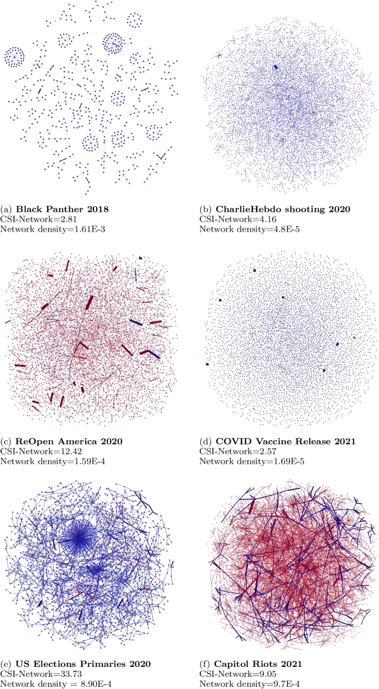

In this semester, I derived a Combined Synchronization Index for evaluating collective action on social media
A combined synchronization index for evaluating collective action social media

We can measure synchronization of users online through how often they tweet with the same artifact (e.g. URL, @mention, hashtag sequence etc) within a short temporal window of each other. However, this measures only one dimension each time. What if we want to know how often two users synchronize with each other across all artifacts, and rank them with respect to the entire data set of users?
So we came up with the Combined Synchronization Index, which first measures user pair synchronization per dimension, then user synchronization in general, normalized with the other users in the dataset. In that respect, we can identify which users are most active in their synchronization efforts. Combining these information into an overall Combined Synchronization Index-Network score reflects the proportion of users that synchronize in multiple dimensions, possibly deliberately coordinating in the message spread.
We applied this to six events: Black Panther release, Charlie hebdo shooting, ReOpen America, Covid vaccine release, US Elections Primaries, Capitol Riots.
Visualizing the synchronization network further suggests that higher CSI-Network scores correlate to denser networks, measured by the network density. The order of the networks in accordance to the network density lines up with the CSI-Network scores, revealing that the CSI-Network quantitatively supports the network graph as a measure of synchronicity.
US Elections and ReOpen America topics are of higher impact and more longstanding conversational topics, and are therefore likely to have a large number of people expressing their opinion on it online, resulting in higher levels of coordination, a part of it could be coincidental synchronicity.
The dominant color of the network graphs indicates the bot participation within the events, thereby indicating the extent the event is organic. Graphs that are predominantly red exhibit bots participate in synchronization more than humans, while graphs that are predominantly blue exhibit humans participate in synchronization more.
The two network graphs that are predominantly red are the ReOpen America 2020 and Capitol Riots 2021 graphs. The presence of synchronized inauthentic behavior within these two events could possibly be a factor to the spillover of the real-world as riots and protests respectively. The bots could be amplifying and spreading the narratives supporting and inciting violence in a coordinated fashion.
The other events show higher coordination between human users, and the extent of coordination reveals the interest humans pay in each event. A huge political event such as the US Elections garners more interests than a social activism event like Black Panther or a shooting. Within social activism events, events that have clear sides like the COVID Vaccine Release with its pro- and anti-vaccine stances seem to have more conversation as compared to the shooting event.
Give it a read here and hopefully you'll find it useful in measuring the synchronization strength between users as well as understading the nature of synchronization